RollerCoaster Tycoon Story is a match 3 puzzle game for mobile that uses an innovative rail match system for players to complete puzzles. Clearing puzzles provides in game currency for players to build their theme park and complete story based missions. This project was a collaboration between Graphite Lab and Atari.
Alongside the rest of the team at Graphite Lab, I contributed art, animation, and C# programming on this project.
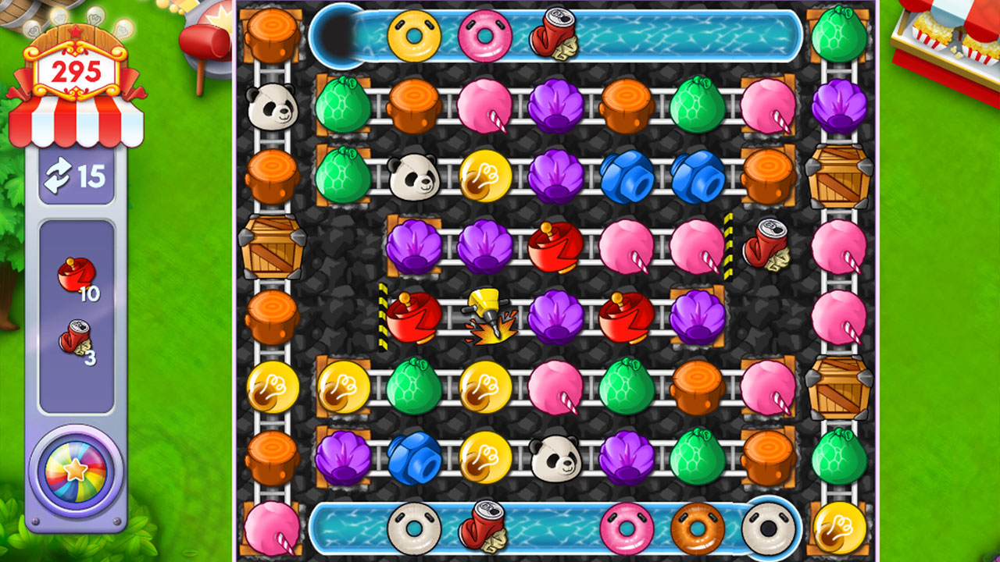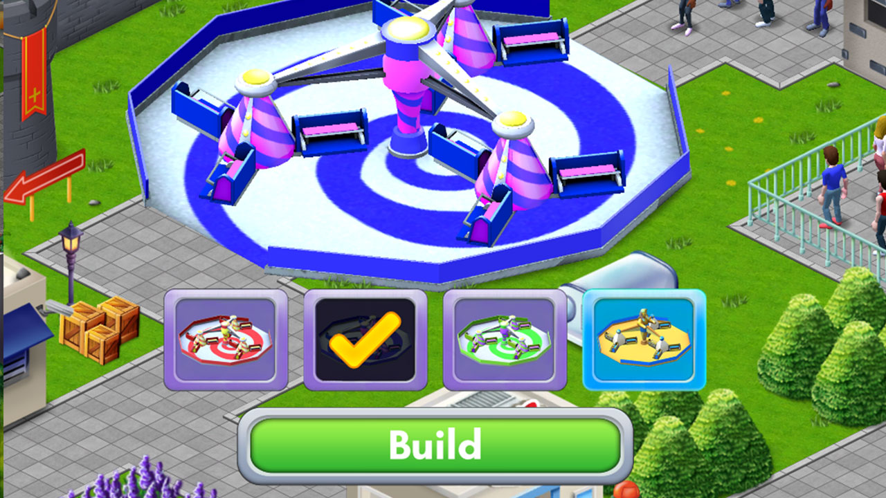
CLUE
Clue for the Infinity Game Table is a digital reimagining of the classic board game. This version includes animations, support for 6 local players, online play, saved games, quick setup, and custom settings.
This was a 2 person development team with myself doing all art, animation, and design. All back-end logic and networking was handled by Rob Santos.
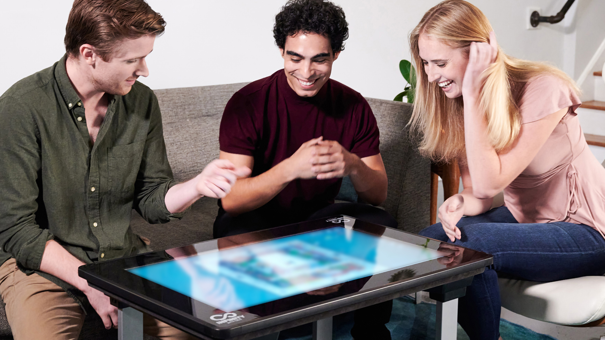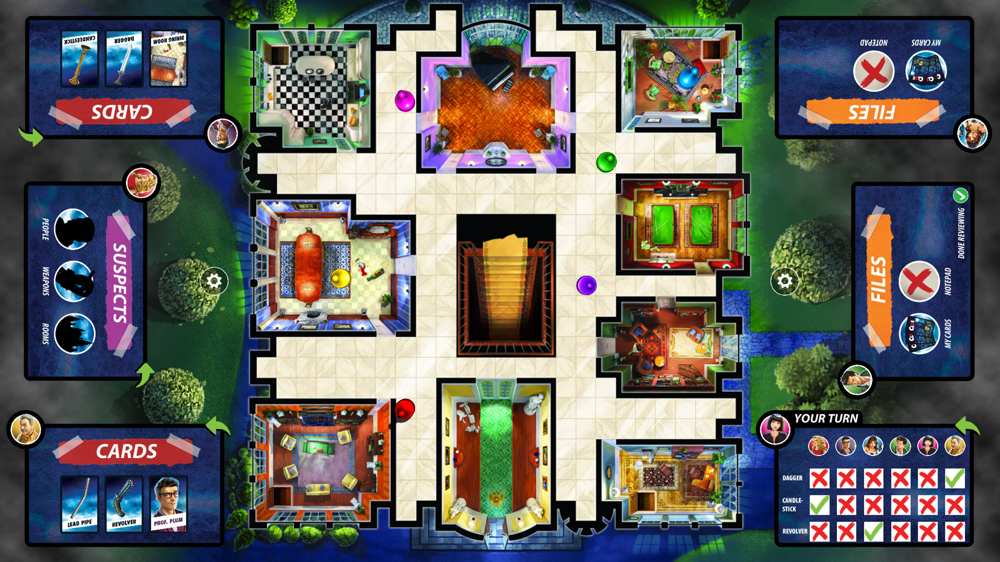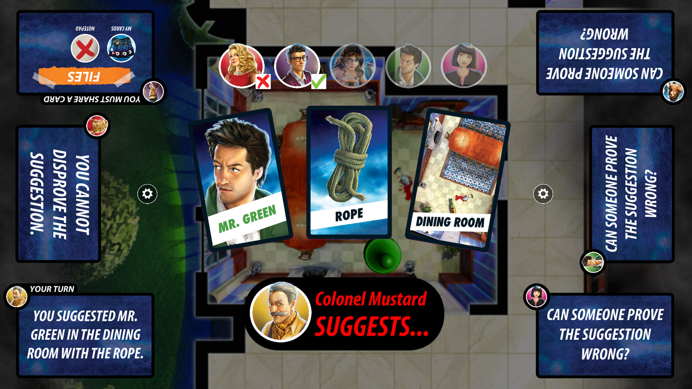
VIRTUAL ROOT DIG
Virtual Root Dig is an augmented reality app developed for Beyer which is intended to show the benefits that their products such as nematicides as bio-enhancers can have on protecting and supporting crop growth. The user can walk around and explore both a soy and corn plant through different phases of its life cycle to identify threats and learn how to treat them.
I was the primary font-end and back-end developer at Graphite Lab for this augmented reality application. 2D art and content was provided by HLK in St.Louis.
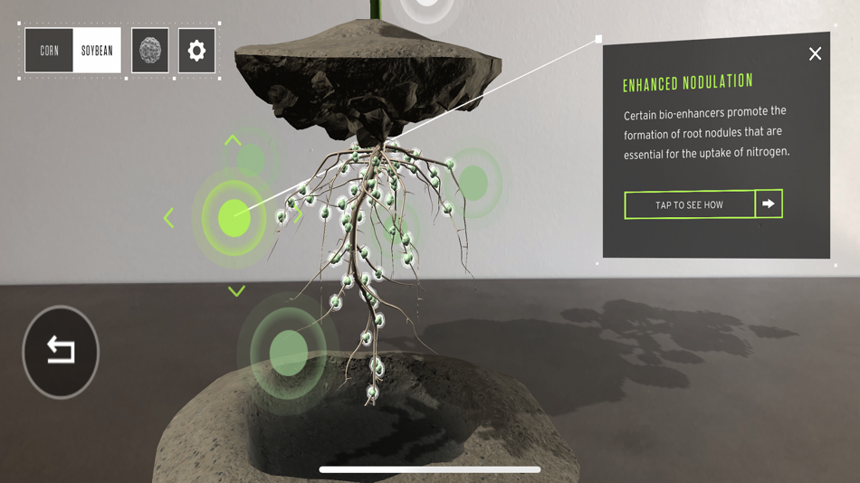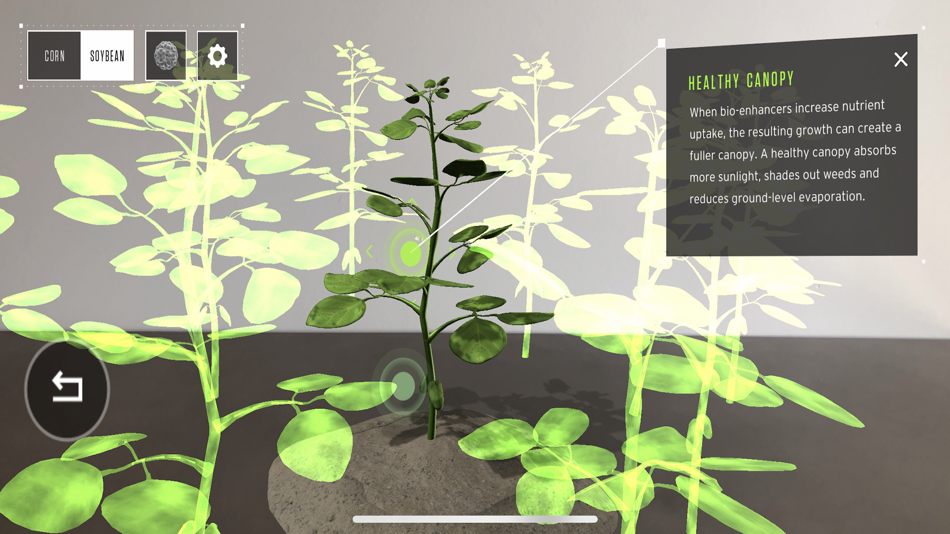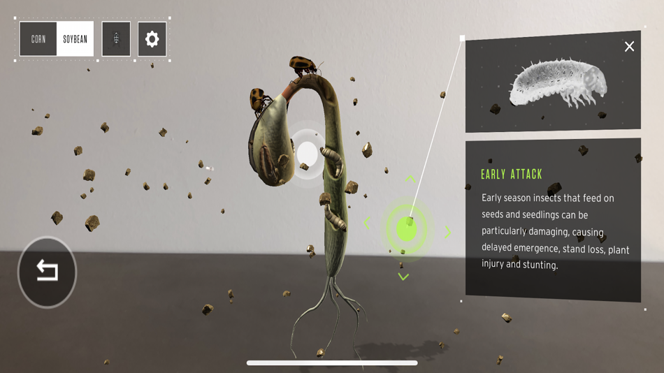
VERIZON TRIVIA
The Verizon Trivia web app was developed to increase visitor engagement at drive-in theaaters during the covid pandemic. Users can join various round of movie trivia using their mobile devices and answer questions displayed on screen to earn prizes before the show begins.
This was a 2 person development team with myself doing front end development. All back-end logic and networking was handled by Rob Santos.
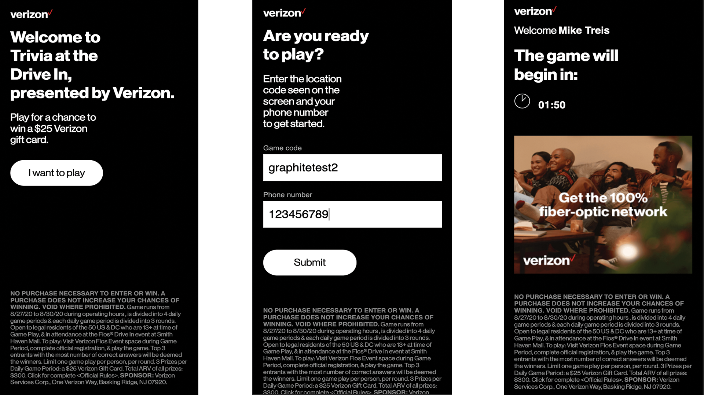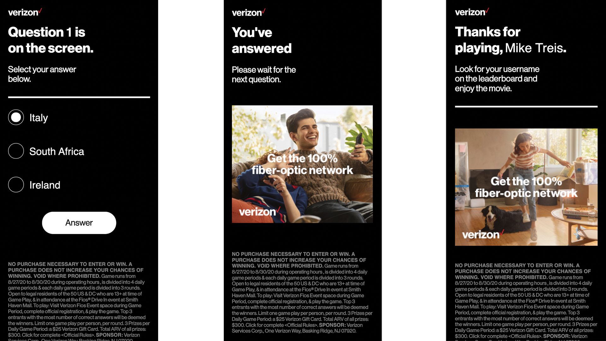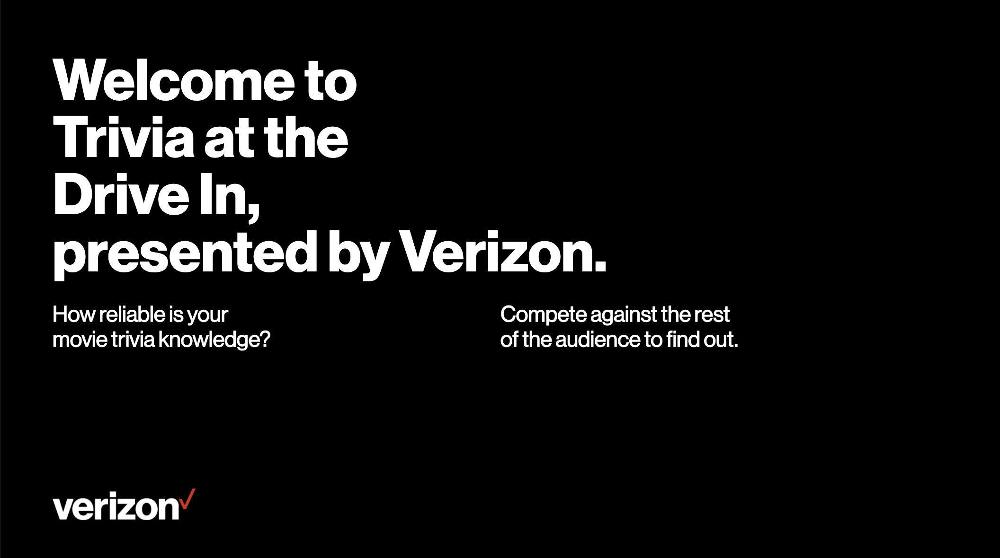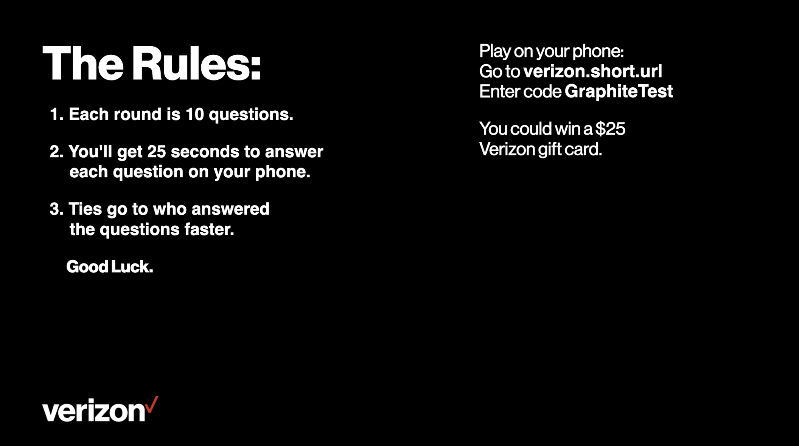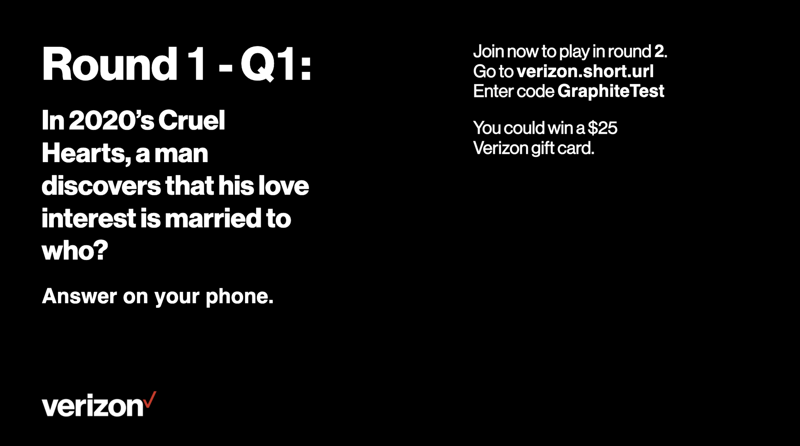
JEOPARDY
Jeopardy for the Infinity Game Table is a digital reimagining of the classic television show. This version includes animations, an optional multiple choice mode, online play, saved games, quick setup, and custom settings.
This was a 2 person development team with myself doing all art, animation, and design. All back-end logic and networking was handled by Rob Santos.